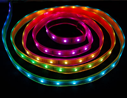

Smart RGB LED strips
Original document by Didel.

There is now a big choice of strips of colored leds. They are supported by libraries for Arduino, Raspberry and ESP8266.
We are interested here about the functionality of chips from different makers and how to write the required low level control routines.
SPI 2-control lines 0 – 20 MHz
WS2801
This 14-pin circuit includes three 8-bit PWM . Easy to program, as shown later. Can be used with any leds and any resistor value. Ck/Data serial transfer.
The LPD8806/LPD6806 is similar but desappeared from the market. Transfer was three 5-bit PWM (16-bit words).
APA102C and SK9822
The APA102C and Sk9822 have SPI-like transfer, no timing constraint. New there is also a miniature APA102C-2020. The APA102C is an additional control register v that sets the brightness of every pixel, independently of its color. APA102 has 20 kHz PWM, SK9822 1.2 kHz:
1-wire control 800 or 580 kHz
(timings see here)
WS2812b
The WS2812 (not shown) was the first RGB 5050 package with the microcontroller inside. 6-pin package replaced by WS2812b
The WS2812b is controlled by one wire with a critical timing that needs bit-banging routines on 16MHz AVR.

APA104
The APA104 has a slightly different timing than the WS2812B, but can be compatible. A 50us delay terminates the shift-in.
APA106
| The APA106 is the through-hole LED version of the APA104. |
SK6812
The SK6812 receives 24 bit words. Transfer speed is 800 kHz.
A word about serial transfers
Shift registers are used to convert a stream of bits synchronized by a clock into parallel data. A parallel register keeps the previous data during the shift and is updated at the end of the transfer. This is the principle of the SPI transfer. Registers can be cascaded.
A popular application for this is to control LEDs. Several manufacturers propose shift registers with constant current sources at the outputs. A single resistor sets the current, same for all LEDs. PWM can be done on every LED. See http://www.didel.com/diduino/CommandeLeds.pdf for an elegant solution updating PWM while shifting.
WS2801 as example of the inside logic
The WS2801 includes a 24 bit shift register with three 8-bit PWM controllers. Three LEDs are controlled by the circuit, usually a RGB SMD LED in a 5050 package. Intensity of LEDs is controlled by a resistor, constant current circuitry makes the intensity independant of the voltage (with 3-5V range).
The block diagram show something new. Data is not shifted through the complete serially connected circuits. The first 24 bits stay in the first circuit. When 24 clocks are counted, a switch transfers the clock to the output. Since there is no load line to transfer the shifted data to the PWM circuit, a one-shot circuit is activated when there is no clock for more than 1 ms. The signals are regenerated, allowing long strips, but adding a delay.
As said before, each circuit takes the first set of clocks and data he receives for himself, not transmitting that information further. The next clocks and data are amplified and transmitted. The delay introduced between each LED may be noticed over very long strips. The APA102C implement an additional trick to make the transmission reliable. It results in a strange formula, incorrect and not explained for the terminating frame. Not easy to well understant if you have not been educated with integrated circuit logic. Let us try! |
For the correct operation of a shift register, the flipflops must have the data stable when the clock edge occurs. set-up and hold time is 5 to 20 ns depending on the technology.The output D' changes after e.g. 20ns, and this must match the set-up time of the next flip-flop. One needs to add output buffers that introduce their own delay, plus the delay of the line. Depending on the difference between the clock and data propagation time, the transfer may not work correctly. One solution is to increase the delay on the data line. This was probably done on the WS2801. It is more reliable to add a flip-flop on the data output, that add a delay of half a clock. This was implemented in the 1970' CD4094 8-bit shift register and is used on the APA102 and SK98. The main advantage is the very high transfer speed it permits. |
 |
Due to the mechanism that allows to access the pixels in the order they have been sent, and not as if it was a simple shift register, data is delayed by half a clock for each consecutive pixel. The last bit sent for the last pixel must be pushed half a clock at a time till its destination.
Color control
 |
Other chips have also 8-bit PWM, with a color order that may differ.
RGB LEDs technology
Discrete LED chips are soldered inside 5050 packages. It is not well documented what are the specifications and how the difference of LED intensity is compensated. In the best case, the information is:
|
RGB vs HSV
RGB is not adequate for mixing colors. Using a "rainbow" variable (called hue) that goes through the rainbow colors is obtained from mixing RGB, as with the rather simple algorithm next from this reference we have reprogrammed in C (see appendix). The hue H has a usually a 0-360 value due to its cylindrical representation. 0-255 is more convenient. The saturation S says how the image is "rich" vs "pale" and will be kept at its maximum of 255. The value V is the brightness 0-255. |
Encoding colors is a rich and complex field. It is well described here.
Note on luminosity
PWM is linear, 0 to 255. Our eye is not linear. 30% of PWM already feels as full light. Not convinced? Program intensity 0,16, 32… with a change every 0.2 seconds. The first steps are visible, not the last 5. This means 16 or 32 intensity values are enough if converted to exponential values.
uint8_t talum[16] = { 0,5,11,18, 26,35,44,54, 64,76,90,110, 135,170,210,255};
Programming existing strips
We are not concerned here about commercial products and their associated libraries. We document how to program from the low level up, using simple portable C. Understanding how to initialize a port is the only requirement to use our libraries.
WS2801/APA102C software
These curcuits have a SPI-like transfer over 2-control lines. The max clock speed for the WS2801 and APA102C is 20 MHz and data set-up time is 30 ns. The order for the WS2801 depends on the wiring between the 14-pin circuit and the RGB LED. The WS2801 restarts when there is no clock for 1ms. It is not documented if the transfer to the output latches is made when the register is filled or at restart.
The APA102 and SK9822 need a start frame of 32 clocks with null data. Then, for every pixel, 4 bytes in the order - intensity, blue, green, red. Finally, additional clocks are given as explained before. No clock for 1ms transfers the data to the LED register, hence minimal clock rate is 1kHz, interrupts must be less than 1ms. AVR SPI can be used, with Ck on pin 13 and Data on pin 11. SS pin is not used, but that pin must be initialised as an output otherwise transmission does not happen. Byte transfer is 2us. Shifting data out by software is slower (7us per byte) but any pin can be used. Using the shiftOut() Arduino function is no sense (slow and not easier).
These are two possible implementations of the Snd8() function.
Example 1:
//Spi.h
#define bDa 3 // MOSI 11 only here
#define bCk 5 // pin 13
#define bLd 2 // SS pin 10
#define SpiControl 0b01010000
// SPIE SPE DORD MSTR CPOL CPHA SPR1 SPR0
void SetupSPI () {
DDRB |= 1<<bCk | 1<<bDa | 1<<bLd ;
SPCR = SpiControl ;
}
void Snd8 (byte dd) {
SPDR = dd;
while (!(SPSR & 1<<SPIF)) {}
}
Example 2:
//S2.h
#define bCk 14 //PORTC
#define bDa 15
#define DaOn bitSet(PORTC,bDa)
#define DaOff bitClear(PORTC,bDa)
#define ClkPulse bitSet(PORTC,bDa); \
bitClear(PORTC,bDa)
void SetupS2 () {
DDRC |= (1<<bCk)+(1<<bDa)
}
void Snd8 (byte dd) {
for (byte i=0;i<8;i++) {
if (dd & 0x80) DaOn;
else DaOff;
CkPulse;
}
}
Note: If byte, bitSet, bitClear is not accepted, add the line #include<Arduino.h>.
In case of the APA102C, the requested transfer order is easily converted to a function. Pixel values can frequently be calculated during the transfer. If the pixel array is in a table, function is:
void SndRGB (byte n) {
Snd8(0x00); Snd8(0x00); Snd8(0x00); Snd8(0x00);
for (byte i=0;i<NN;i++) { Snd8(aa[i]); Snd8(gg[i]); Snd8(bb[i]); Snd8(rr[i]); }
for (byte i=0; i<(NN+1)/2; i++) {CkOn; CkOff;} delay (10);
}
If you give the correct number of clock pulses, only the declared LEDs will be activated.
See https://github.com/nicoud/RgbLeds for downloading the code.
You can find useful information on the APA102C on https://www.pololu.com/product/2554 with comments on APA102C vs SK6812.
1-wire smart LEDs
Saving one wire is not a real advantage, since it is slower and less reliable both on hardware and software side. These circuits have critical timing need need bit-banging assembler code or macros. Interrupts must be disables during transfers.
$Id: index.md,v 1.2 2017-01-03 15:02:22 obiwan Exp $